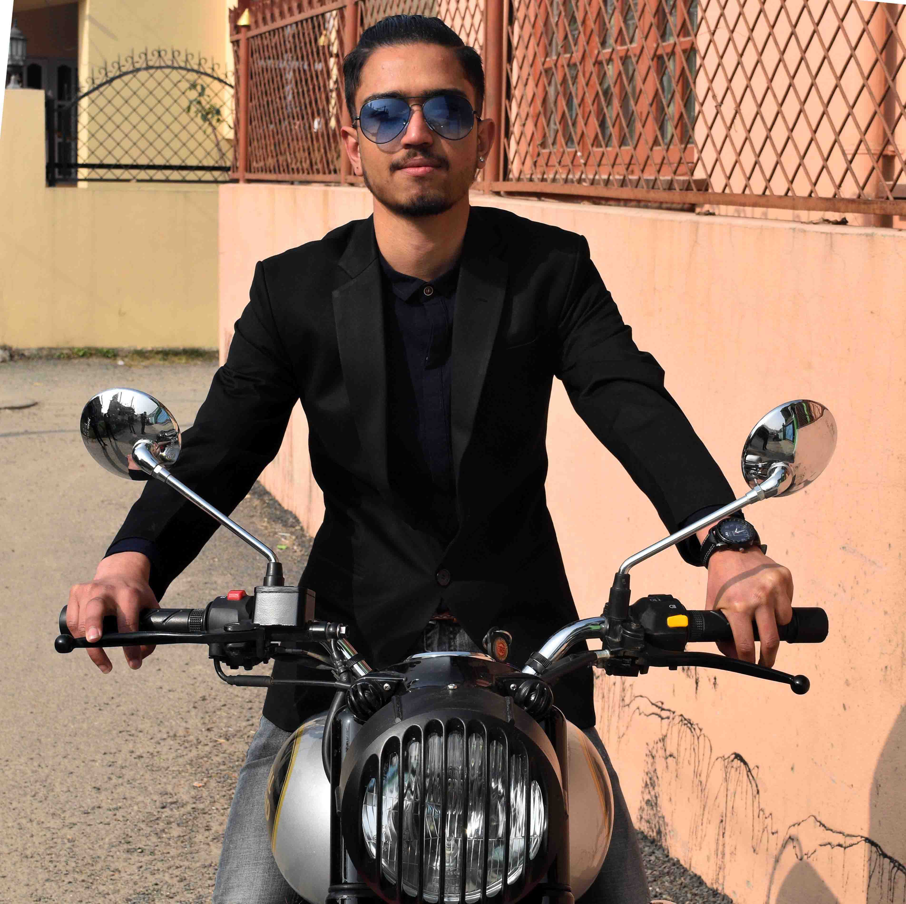

"A person wanted to see smile on every individual."
Kiran Aryal moved to Kathmandu from Butwal in search of good education in 2014.
He studied high school in Kathmandu Model College taking Science faculty.
Presently, he's studying BSc (Hons.) Computing in NAMI college working with
partnership to The University of Northampton, UK. Passionate about the computer,
the move to Kathmandu was fit for him. With encouragement from family and neighbours,
he started to learn programming after joining bachelors in Kathmandu.
He have keen interest in music. He loves playing guitar. Most of his leasure time is
filled with playing this awesome instrument. He owns an epiphone acoustic guitar which is
his 3rd guitar.